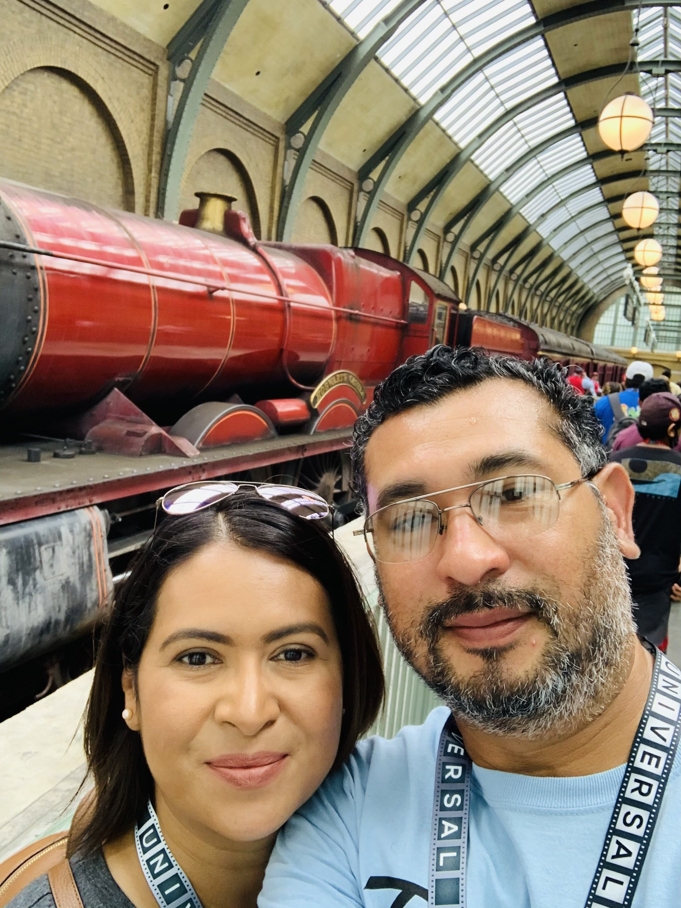
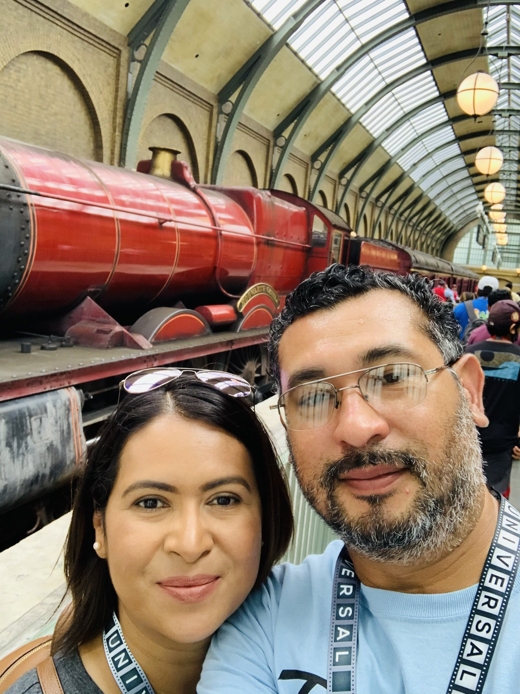

Meet Hugo Navarro!
My Father was born on (a day after mine) January 31st, 1980 making him 43 years of age and that makes him the oldest member in the house. He has lived almost his entire childhood in Matamoros, Mexico. Then later for High School moved into the states. He went from Mexico, to Minnesota, and slowly made his way down and landed in Baytown, Texas. Where he played a high-level of baseball and his little league team even won a State Tournament, even met my Mother in Baytown.
My dad currently is all over the place in terms of jobs. He has a Bachelor's in Darfting and has worked as both a Contractor and an Inspector. He has been a large part of my life and one of the main reasons why I am here in Montana today. He is very good at playing the accordion, but, He is not a singer, though he tries to be. He watches loads of baseball, and before I made him, he had never watched an ounce of Soccer.
 
